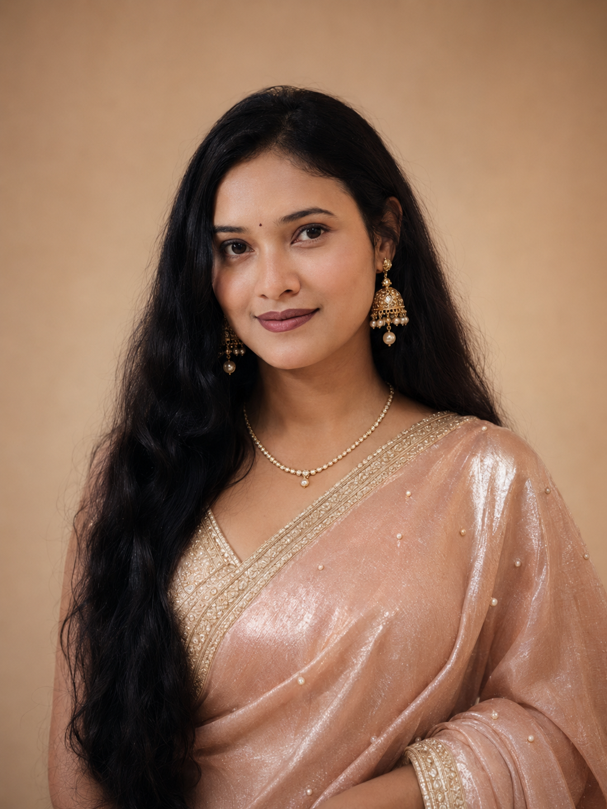

Current
Current research project will be updated soon
Project details will be updated soon, including objectives, study location, methods, and conservation relevance.
Zoology · Primatology · Conservation
Studying the primates others overlook — in the forests, markets, and communities of Bangladesh.

About
I am Mst. Sadia Afrin Shimu, a zoology researcher based in Bangladesh, focused on primate conservation, biodiversity documentation, environmental education, and field-based ecological research.
My work bridges academic inquiry with on-the-ground conservation practice — studying Bengal slow lorises, documenting trafficking threats, raising awareness in school communities, and contributing to national biodiversity knowledge. I believe conservation starts with education, and education must be rooted in field reality.
I am affiliated with Jagannath University, Dhaka, where I completed my BSc in Zoology and am continuing postgraduate research. My fieldwork has taken me across Bangladesh's forests, wetlands, and mangrove systems.
Academic History
MSc · In Progress
BSc · Completed
Higher Secondary
Secondary
Research Portfolio
Project details will be updated soon, including objectives, study location, methods, and conservation relevance.
Conservation-from-the-root awareness program targeting school communities to protect the Endangered Bengal slow loris in Bangladesh. Combined field observation with structured education outreach reaching over 1,000 students.
Field and market-based documentation of live primate trafficking patterns in Bangladesh, contributing to the first systematic overview of trafficking routes, species affected, and scale of threat to remaining wild populations.
Behavioral ecology study tracking daily activity budgets and home range use of two confiscated Bengal slow lorises rehabilitated in a forest patch. Documented feeding, resting, travel, and social behaviors over multiple observation cycles.
Academic Outputs
Journal Article
Research Communication
Research Report
Organizer, location, and year to be updated
Role: Role to be updated | Topic: Topic to be updated
Fieldwork
Field identification, collection methods, habitat notes, and ecological role documentation across diverse habitats.
Observation of amphibians, reptiles, birds, and mammals — behavioral notes and conservation status assessment.
Fish diversity surveys, aquatic habitat assessment, ecosystem relationships, and freshwater documentation.
Sundarbans and mangrove biodiversity study — species diversity, ecological adaptation, conservation challenges.
Focal animal sampling, scan sampling, home range tracking, and behavioral observation of non-human primates.
Species photography, GPS-referenced observations, field notes, and data entry for biodiversity records.
Competencies
Engagement
Role title, organization, dates, and coordination responsibilities will be updated soon.
Designed and led awareness programs in schools and communities, managing volunteers, scheduling sessions, and communicating conservation science to non-specialist audiences.
Club name, role, activities, and outcomes will be updated soon.
Field assistance, event logistics support, awareness workshop facilitation, and team collaboration in conservation and research events across Bangladesh.
Journey
From the field, the forest, and the classroom.
Contact
For research collaboration, conservation education, publication records, or academic correspondence — reach out directly.